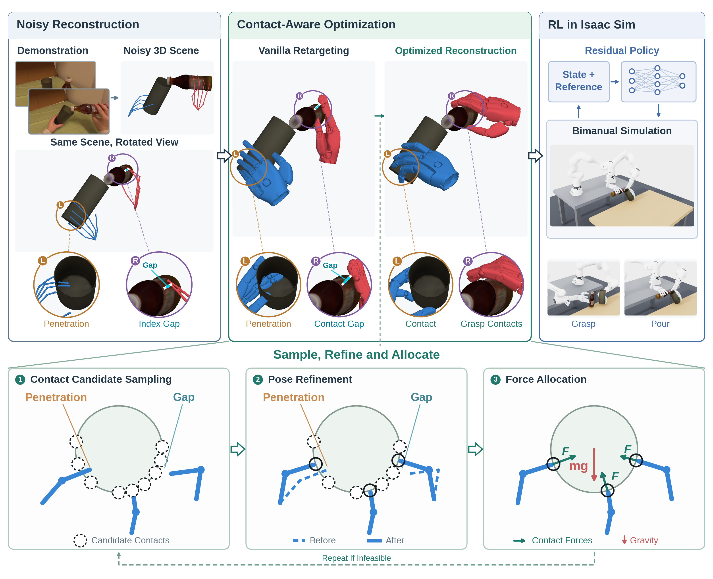
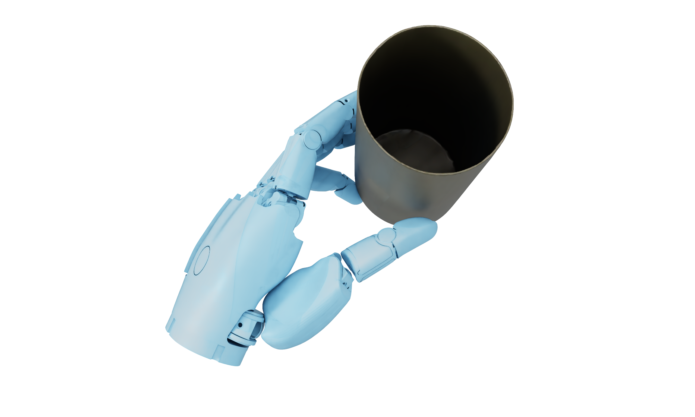
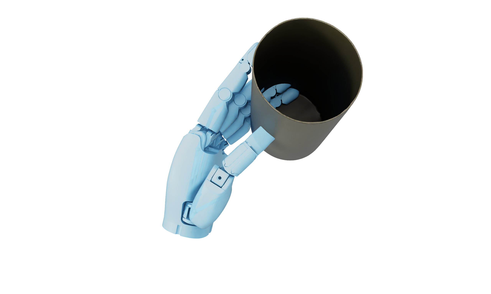
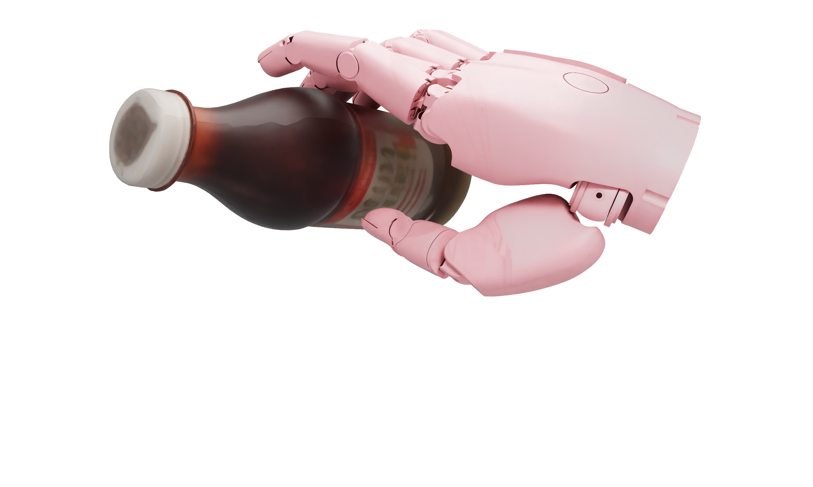
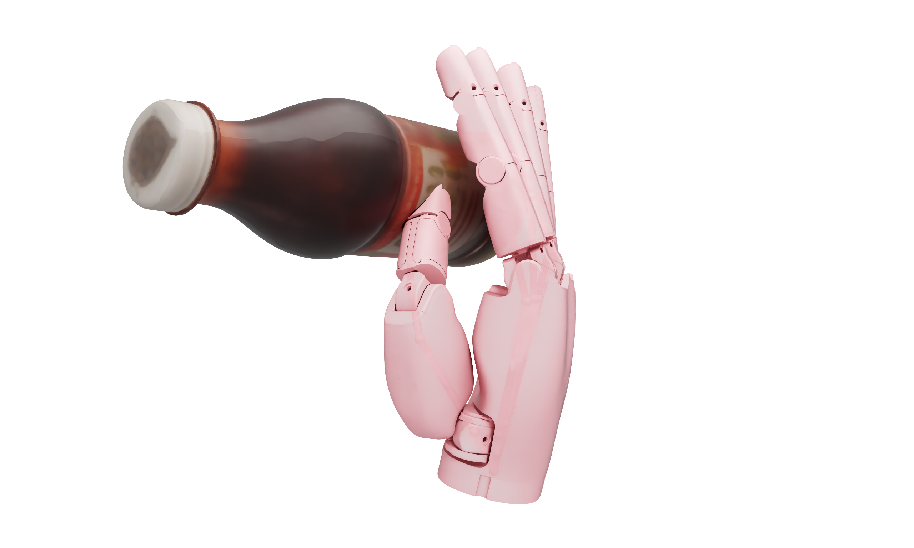

Sample contacts
Search near the demonstrated hand gesture for contacts reachable by the robot.
While expert demonstrations on real robots are difficult to collect, human ego-centric videos are easy to collect and abundant on the internet. However, learning dexterous manipulation policies from human videos remains challenging—one of the most important challenges being the difficulty of reconstructing physically grounded robot trajectories due to the large embodiment gap.
In this paper, we propose EgoCPT, a novel paradigm for learning high-quality retargeted dexterous hand trajectories directly from an ego-centric video, which can then be deployed directly on real robots. The only inputs to our method are an ego-centric RGB video and a reference hand pose trajectory, which can be easily obtained through off-the-shelf software or specialized cameras during recording. Our method is particularly robust to noisy hand poses attributed to our novel contact-aware optimization framework, which iteratively optimizes the contact points between the robot hands and objects.
Across five manipulation tasks, our method achieves overall success rates of 67.3% on noisy EgoDex hand-pose reconstructions and 92.0% on high-quality TACO reconstructions collected using motion-capture hardware, outperforming multiple baselines on both benchmarks.
Noisy reconstruction and a change in embodiment can break hand–object contact. Instead of copying these contacts, EgoCPT searches for a robot-native way to realize the demonstrated object motion.

Search near the demonstrated hand gesture for contacts reachable by the robot.
Adjust the wrists and fingers to remove penetration and close contact gaps.
Find contact forces consistent with the target object motion, then refine again when needed.
Drag the dividers to compare vanilla retargeting and contact-aware optimization.




Robot hand–object trajectories reconstructed from egocentric demonstrations.
Reconstructed reference trajectories visualized in Isaac Sim. 1× playback; the stapler excerpt ends before hand release.
The same optimization also operates on high-quality TACO hand and object trajectories.
A selection of reconstructed interactions. Playback rates are indicated in each tile.
@misc{sun2026egocpt,
title = {EgoCPT: Learning Dexterous Manipulation from a Single
Ego-Centric Video with Contact-Aware Optimization},
author = {Sun, Zhixin and Shi, Kairui and Ren, Tianao and
Yang, Ming and Cutkosky, Mark and Xu, James Jingxi},
year = {2026}
}